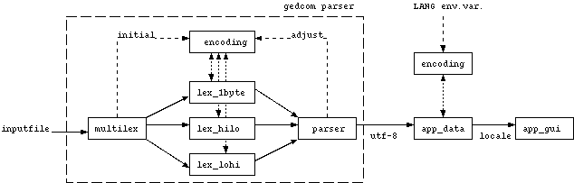

The intention of this page is to provide some explanation
of the gedcom parser, to aid development on and with it. First,
some practical issues of testing with the parser will be explained.
Basic testing
You should be able to perform a basic test using the commands:
./configure
make
make check
If everything goes OK, you'll see that some gedcom files are parsed,
and that each parse is successful. Note that the used gedcom files
are made by
Heiner
Eichmann and are an excellent way to test gedcom parsers thoroughly.
Preparing for further testing
The basic testing described above doesn't show anything else than
"Parse succeeded", which is nice, but not very interesting. Some
more detailed tests are possible, via the
testgedcom program
that is generated by
make test.
However, since the output that
testgedcom generates
is in UTF-8 format (more on this later), some preparation is necessary
to have a full view on it. Basically, you need a terminal that understands
and can display UTF-8 encoded characters, and you need to proper fonts
installed to display them. I'll give some advice on this here,
based on the Red Hat 7.1 distribution that I use, with glibc 2.2 and XFree86
4.0.x. Any other distribution that has the same or newer versions
for these components should give the same results.
For the first issue, the UTF-8 capable terminal, the safest bet is
to use
xterm in its unicode mode (which is supported by
the
xterm coming with XFree86 4.0.x). UTF-8 capabilities
have only recently been added to
gnome-terminal, so probably
that is not in your distribution yet (it certainly isn't in Red Hat 7.1).
For the second issue, you'll need the ISO 10646-1 fonts. These
come also with XFree86 4.0.x.
The way to start
xterm in unicode mode is then e.g.
(put everything on 1 line !):
LANG=en_GB.UTF-8 xterm -bg 'black' -fg 'DarkGrey' -cm
-fn '-Misc-Fixed-Medium-R-SemiCondensed--13-120-75-75-C-60-ISO10646-1'
This first sets the
LANG variable to a locale that
uses UTF-8, and then starts
xterm with a proper Unicode font.
Some sample UTF-8 plain text files can be found
here . Just
cat them on the command line
and see the result.
Testing the parser with debugging
Given the UTF-8 capable terminal, you can now let the
testgedcom
program print the values that it parses. An example of a command
line is (in the
gedcom directory):
./testgedcom -dg t/ulhc.ged
The
-dg option instructs the parser to show its own debug
messages (see
./testgedcom -h for the full set of options).
If everything is OK, you'll see the values from the gedcom file,
containing a lot of special characters.
For the ANSEL test file (
t/ansel.ged), you have to set
the environment variable
GCONV_PATH to the
ansel
subdirectory of the gedcom directory:
export GCONV_PATH=./ansel
./testgedcom -dg t/ansel.ged
This is because for the ANSEL character set an extra module is needed
for the iconv library (more on this later). But again, this should
show a lot of special characters.
Testing the lexers separately
The lexers themselves can be tested separately. For the 1-byte
lexer (i.e. supporting the encodings with 1 byte per characters, such as
ASCII, ANSI and ANSEL), the sequence of commands would be:
make clean
make test_1byte
This will show all tokens in the
t/allged.ged test file.
Similar tests can be done using
make test_hilo and
make test_lohi (for the unicode lexers).
This concludes the testing setup. Now for some explanations...
Structure of the parser
I see the structure of a program using the gedcom parser as follows:

TO BE COMPLETED...
$Id$
$Name$